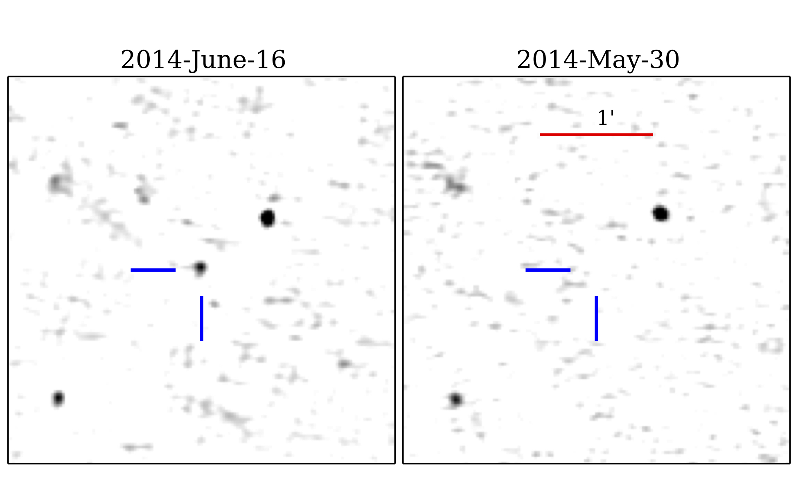
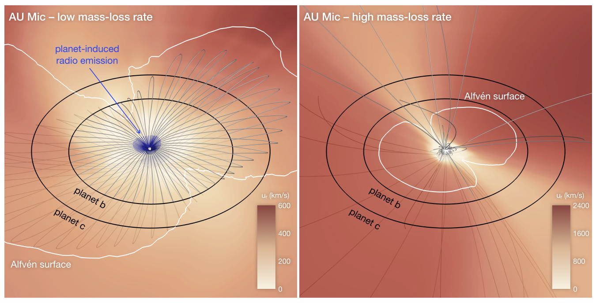
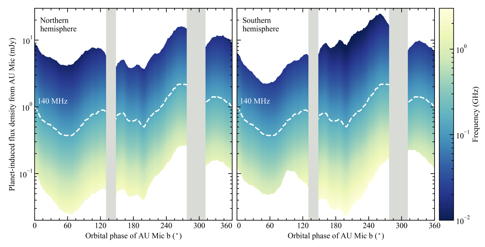
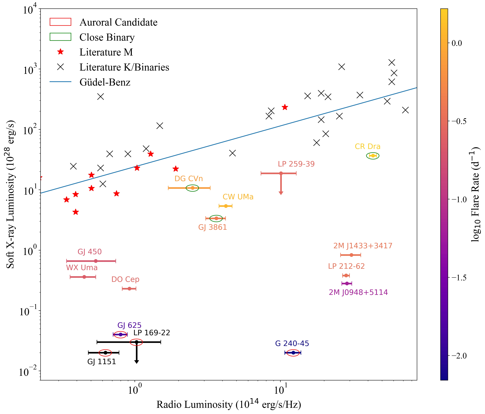

Radio Observations
of Star-Planet Magnetic Interaction
Benjamin Pope, UQ
Callingham et al. 2021: "The population of M dwarfs observed at low radio frequencies", Nature Astronomy
Pope et al. 2021: "The TESS View of LOFAR Radio-Emitting Stars", ApJL
benjaminpope.github.io/talks/mqastro/mqastro
Radio Astronomy
Theorists now say that expanded ionospheres of hot Jupiters might self-absorb this emission down to undetectable levels.
LOFAR
Kepler showed us almost all stars have planets - so no point targeting known exoplanets!
Unbiased survey: cross-matching LOFAR Stokes V sources with Gaia DR2 50 pc sample we obtain many matches
GJ 1151
... but GJ 1151 is inactive and this emission is steady during the epoch it is detected.

Simulations by Kavanagh et al predict radio emission from planets inside the 'Alfvén surface' (where Alfvén speed > wind speed)
Kavanagh et al lightcurve is consistent with GJ 1151 variability.
RV Followup inconclusive: Pope+ 2020, Mahadevan+ 2021, Perger+ 2021
Upper limit of 1.2m/s - about an Earth mass in a few day orbit.
The Whole Sample
Güdel-Benz Diagram
Active stars

Quiescent stars

The Future
With the SKA - hundreds!